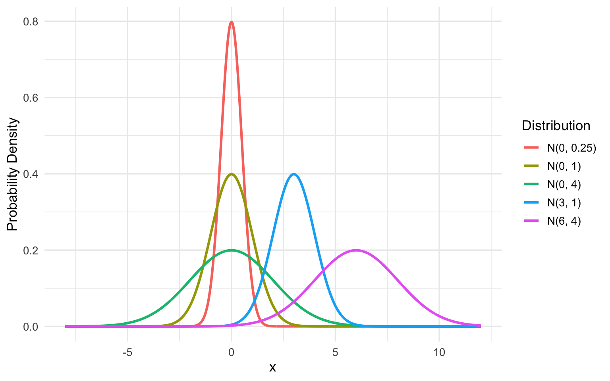
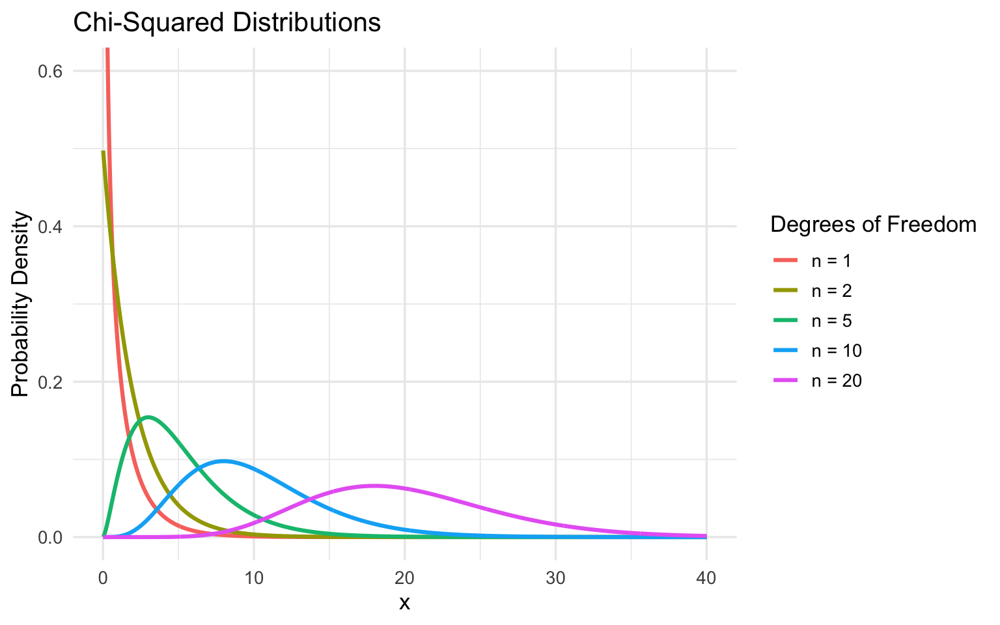
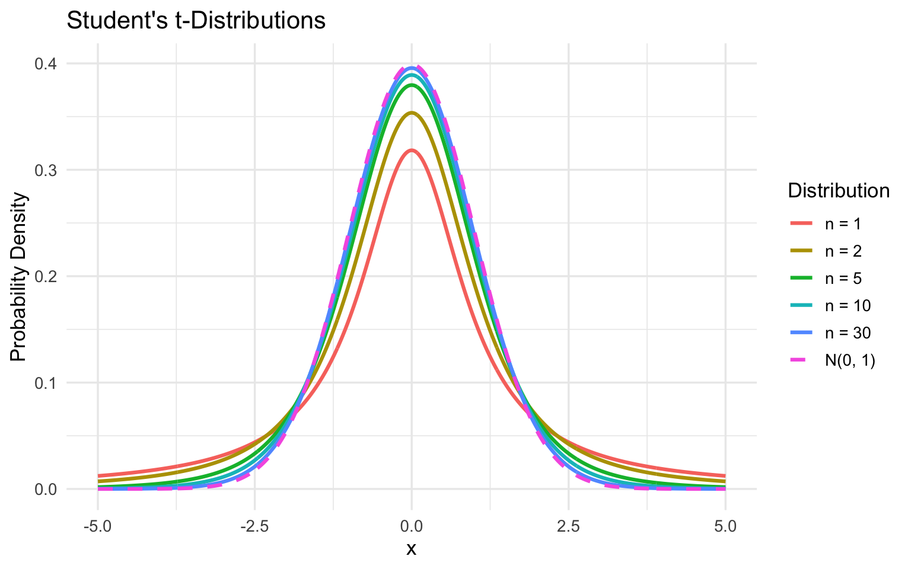
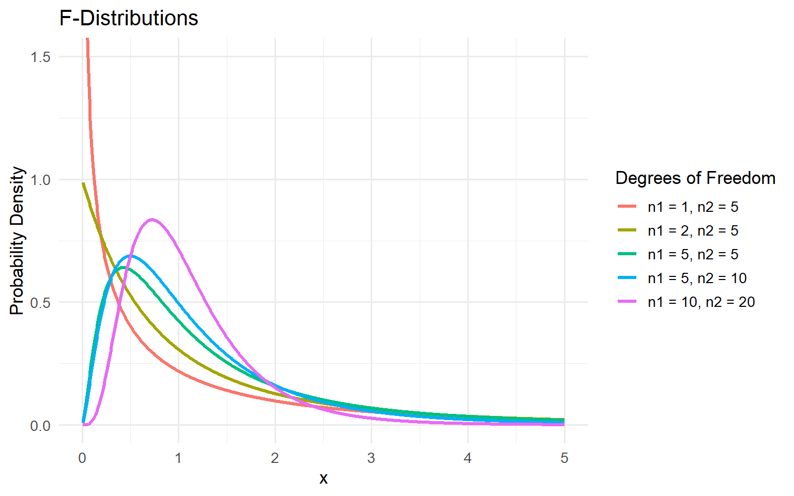
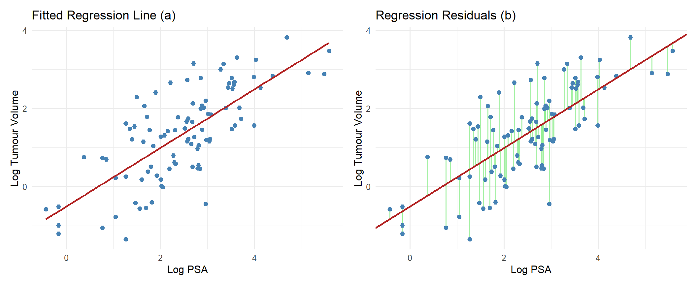
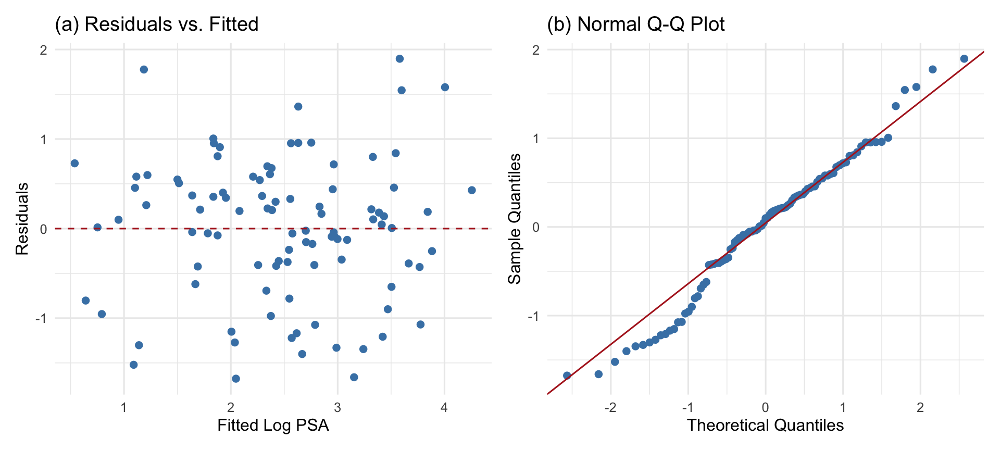
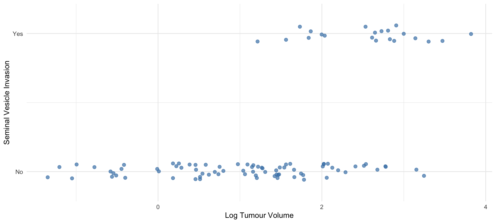

Chapter 6 Statistical Methods in Oncology
6.1 Review of Probability Distributions
Probability distributions are fundamental to statistical modelling, as they describe the likelihood of different outcomes of random processes. In oncology, probability distributions are used to model various outcomes, including whether a patient develops cancer, the number of patients who respond to a treatment, and the time until disease recurrence or death. Different statistical methods rely on different probability distributions depending on the nature of the outcome being studied.
6.1.1 Random Variables and Probability Distributions
A random variable is a function that assigns a real number to each outcome of a random experiment. Random variables may be classified as either discrete or continuous.
A discrete random variable takes values on a finite or countable infinite set. Its distribution can be described by a probability mass function (PMF),
\[ p_X(x)=P(X=x), \]
which satisfies \(p_X(x)\geq 0\) and \(\sum_x p_X(x)=1.\)
A continuous random variable takes values from an uncountable infinite set. A continuous random variable has a distribution that can be described by a probability density function (PDF), denoted by \(f_X(x)\), satisfying \(f_X(x)\geq 0\) and \(\int_{-\infty}^{\infty} f_X(x)\,dx=1.\)
For a continuous random variable, probabilities over intervals are calculated by integration. In particular,
\[ P(a\leq X\leq b)=\int_a^b f_X(x)\,dx. \]
Both discrete and continuous random variables can be described by their cumulative distribution function (CDF),
\[ F_X(x)=P(X\leq x). \]
The expected value and variance are used to describe the centre and variability of a probability distribution. The expected value of \(X\) is denoted by \(E(X)\), while its variance is defined as \(\operatorname{Var}(X)=E[(X-E(X)^2]\), the expected squared deviation from the mean.
If \(X_1, X_2,...,X_n\) be independent random variables, \[E(\sum_{i=1}^n c_i X_i)=\sum_{i=1}^n c_i E(X_i), \] and \[\operatorname{Var} (\sum_{i=1}^n c_i X_i)= \sum_{i=1}^n c_i^2 \operatorname{Var} (X_i) \]
We now introduce common discrete and continuous probability distributions and discuss their applications in oncology.
6.1.2 Discrete Probability Distributions
6.1.2.1 Bernoulli Distribution
The Bernoulli distribution describes a random experiment with two possible outcomes, typically represented by \(0\) and \(1\). It is particularly useful for modelling binary outcomes.
Let \(X\) be a Bernoulli random variable with parameter \(p\), where \(0\leq p\leq 1\). We write \(X\sim\operatorname{Bernoulli}(p).\)
The probability mass function is
\[ P(X=x)=p^x(1-p)^{1-x}, \qquad x=0,1. \]
The expected value and variance are \(E(X)=p\) and \(\operatorname{Var}(X)=p(1-p)\).
Suppose researchers are interested in whether a patient responds to a particular cancer treatment. Let \(X=1\) indicate that a patient responds to treatment and \(X=0\) indicate that the patient does not respond. If the probability of responding is \(p\), then \(X\) follows a Bernoulli distribution.
The Bernoulli distribution is particularly important in logistic regression, where the probability of a binary outcome is modelled as a function of explanatory variables.
6.1.2.2 Binomial Distribution
The binomial distribution describes the number of successes in a fixed number of independent Bernoulli trials, each with the same probability of success.
Let \(X\) denote the number of successes in \(n\) independent trials, each with probability of success \(p\). Then, \(X\sim\operatorname{Binomial}(n,p)\).
The probability mass function is
\[ P(X=x)=\binom{n}{x}p^x(1-p)^{n-x}, \qquad x=0,1,\ldots,n. \]
The expected value and variance are \(E(X)=np\) and \(\operatorname{Var}(X)=np(1-p)\).
Suppose a clinical trial involves \(100\) patients receiving a particular cancer treatment. If each patient independently responds with probability \(p=0.7\), then the number of patients who respond can be modelled as \(X\sim\operatorname{Binomial}(100,0.7)\).
The expected number of patients who respond is \(E(X)=100(0.7)=70\).
Also, the probability that more than \(72\) patients respond to the treatment is
\[ P(X > 72) = \sum_{x = 73}^{100} \binom{100}{x} (0.7)^x (0.3)^{100-x} \approx 0.2963662 \] Experiment with changing the values of \(n\), \(p\), and the threshold to investigate how the probability changes.
6.1.3 Continuous Probability Distributions
6.1.3.1 Normal Distribution
The normal distribution is a continuous probability distribution characterized by its symmetric, bell-shaped density function. Let \(X\) follow a normal distribution with mean \(\mu\) and variance \(\sigma^2\), where \(\sigma>0\). We write \(X\sim N(\mu,\sigma^2).\)
Its probability density function is
\[ f_X(x)=\frac{1}{\sqrt{2\pi \sigma^2}} \exp\left( -\frac{(x-\mu)^2}{2\sigma^2} \right), \qquad -\infty<x<\infty. \]
The expected value and variance are \(E(X)=\mu\) and \(\operatorname{Var}(X)=\sigma^2.\)
If \(X \sim N(\mu, sigma^2)\), then \(Z = \frac{X-\mu}{\sigma} \sim N(0,1)\). We say \(Z\) follows a standard normal distribution.
Also, if \(X_1,X_2,...,X_n\) are normal random variables, then \(\sum_{i=1}^n {c_i X_i}\) is also a normal random variable, where \(c_1,c_2,...,c_n \in \mathbb{R}\). That is, a linear combination of normal random variables is also normal.

Figure 6.1: Normal distributions with different means and variances.
6.1.3.2 Chi-Squared Distribution
Let \(Z_1,Z_2,\ldots,Z_{n}\) be independent standard normal random variables, where \(n\) is a positive integer. Then the random variable
\[ X=\sum_{i=1}^{n}Z_i^2 \]
follows a chi-squared distribution with \(n\) degrees of freedom. We write \(X\sim\chi^2_{n}.\)
Its probability density function is
\[ f_X(x)= \frac{1}{2^{n/2}\Gamma(n/2)} x^{n/2-1}e^{-x/2}, \qquad x>0, \]
where \(\Gamma(\cdot)\) denotes the gamma function.
The expected value and variance are \(E(X)=n\) and \(\operatorname{Var}(X)=2n.\)
A very useful result is that \[ \frac{(n-1)s^2}{\sigma^2} \sim \chi^2_{n-1},\] where \(s^2\) is the sample variance, and \(\sigma^2\) is the population variance.
The chi-squared distribution is nonnegative and generally right-skewed. Its shape depends on the degrees of freedom, becoming less skewed as the degrees of freedom increase.

Figure 6.2: Chi-squared distributions with different degrees of freedom.
6.1.3.3 Student’s t-Distribution
Let \(Z \sim N(0,1)\) and \(W \sim \chi^2_{n}\). Then \(X = \frac{Z}{\sqrt{\frac{W}{n}}}\) follows a Student’s t-distribution with \(n>0\) degrees of freedom. We write \(X\sim t_{n}.\)
Its probability density function is
\[ f_X(x)= \frac{\Gamma\left(\frac{n+1}{2}\right)} {\sqrt{n \pi}\Gamma\left(\frac{n}{2}\right)} \left(1+\frac{x^2}{n}\right)^{-\frac{n+1}{2}}, \qquad -\infty<x<\infty, \]
where \(\Gamma(\cdot)\) denotes the gamma function and \(n\) represents the degrees of freedom.
The expected value is \(E(X)=0,\qquad n>1,\) and the variance is \(\operatorname{Var}(X)=\frac{n}{n-2},\qquad n>2.\)
The Student’s t-distribution is a continuous probability distribution that is symmetric about zero and resembles the standard normal distribution. However, the t-distribution has heavier tails, allowing for greater variability and more extreme observations. The shape of the Student’s t-distribution depends on its degrees of freedom, denoted by \(n\). For smaller values of \(n\), the distribution has heavier tails and a lower peak compared to the standard normal distribution. As \(n\) increases, the tails become lighter and the distribution approaches the standard normal distribution. In particular, as \(n\to\infty\), the Student’s t-distribution converges in distribution to \(N(0,1)\).

Figure 6.3: Student’s t-distributions with different degrees of freedom, compared with the standard normal distribution.
It is particularly useful for statistical inference when the population variance is unknown. In linear regression, t-tests are commonly used to determine whether regression coefficients differ significantly from zero. For example, researchers may use a t-test to investigate whether a patient’s age is significantly associated with tumour size after accounting for other explanatory variables. We discuss this in further detail later in the chapter.
6.1.3.4 F-Distribution
Let \(U\) and \(V\) be independent chi-squared random variables with \(n_1\) and \(n_2\) degrees of freedom, respectively. That is,
\[ U\sim\chi^2_{n_1} \qquad\text{and}\qquad V\sim\chi^2_{n_2}. \]
Then the random variable
\[ X=\frac{U/n_1}{V/n_2} \]
follows an F-distribution with \(n_1\) numerator degrees of freedom and \(n_2\) denominator degrees of freedom. We write \(X\sim F_{n_1,n_2}\).
Its probability density function is
\[ f_X(x)= \frac{\Gamma((n_1+n_2)/2)} {\Gamma(n_1/2)\Gamma(n_2/2)} \left(\frac{n_1}{n_2}\right)^{n_1/2} \frac{x^{n_1/2-1}} {\left(1+\frac{n_1}{n_2}x\right)^{(n_1+n_2)/2}}, \qquad x>0, \]
where \(\Gamma(\cdot)\) denotes the gamma function.
The expected value and variance are \(E(X)=\frac{n_2}{n_2-2}\) for \(n_2>2\) and \(\operatorname{Var}(X)=\frac{2n_2^2(n_1+n_2-2)}{n_1(n_2-2)^2(n_2-4)}\) for \(n_2>4.\)

Figure 6.4: F-distributions with different numerator and denominator degrees of freedom.
The F-distribution is nonnegative and generally right-skewed. Its shape depends on both the numerator and denominator degrees of freedom, becoming increasingly concentrated around one as both degrees of freedom increase.
The F-distribution is commonly used in hypothesis testing, particularly when comparing population variances, and testing the significance of regression models which is explored later in the chapter.
6.2 Simple Linear Regression
Regression analysis is a statistical method used to study relationships between a response variable and one or more explanatory variables. In oncology, regression models can be used to study relationships between patient characteristics, treatment-related factors, and clinical outcomes.
Simple linear regression (SLR) examines the relationship between a continuous response variable and an explanatory variable by assuming that their relationship is linear. Understanding SLR provides a foundation for more complex statistical models, including multiple linear regression and logistic regression.
6.2.1 The Simple Linear Regression Model
Let \(Y_i\) denote the response variable for observation \(i\) and let \(x_i\) denote the corresponding explanatory variable. The simple linear regression model is defined as
\[ Y_i=\beta_0+\beta_1x_i+\varepsilon_i, \qquad i=1,\ldots,n, \]
where:
- \(Y_i\) is the response variable for observation \(i\).
- \(x_i\) is the explanatory variable for observation \(i\).
- \(\beta_0\) is the population intercept.
- \(\beta_1\) is the population slope.
- \(\varepsilon_i\) is the random error associated with observation \(i\).
- \(n\) is the number of observations.
The population regression coefficients \(\beta_0\) and \(\beta_1\) are generally unknown and must be estimated using observed data. Their estimates are denoted by \(\hat{\beta}_0\) and \(\hat{\beta}_1\), respectively.
The fitted regression equation is \(\hat{Y}_i=\hat{\beta}_0+\hat{\beta}_1x_i,\) where \(\hat{Y}_i\) represents the predicted value of the response variable for observation \(i\).
Note that a linear association between the response and explanatory variables does not imply a causal relationship between them.
To illustrate the application of simple linear regression in oncology, we consider prostate cancer dataset available in the faraway package in R. The dataset contains clinical measurements from 97 men with prostate cancer, including tumour volume, prostate-specific antigen (PSA) levels, age, and other patient characteristics. PSA is a protein produced by cells in the prostate gland, and its concentration in the blood is commonly used in the assessment and monitoring of prostate cancer.
We are interested in investigating the relationship between tumour volume and PSA levels. Since both variables are right-skewed, we consider their logarithmic transformations, which provide a more suitable basis for linear regression. Let \(X_i\) denote the log PSA level (lpsa) and \(Y_i\) denote the log tumour volume (lcavol) of patient \(i\).
Run the following code to display the observations.
Below are the plots for the relationship between PSA levels and tumour volumes for 97 men.

Figure 6.5: Relationship between log tumour volume and log PSA levels, with the fitted regression line and associated residuals.
Figure (a) illustrates the fitted least squares regression line, which describes the estimated linear relationship between log tumour volume and log PSA levels. Each point represents an observed log tumour volume for a given log PSA level, while the red line represents the predicted log tumour volume. Figure (b) additionally displays the residuals, represented by the green vertical segments. Each residual measures the difference between an observed log tumour volume and its predicted value under the fitted regression model.
We demonstrate how to obtain the fitted regression line and to further analyse if a linear association between log tumour volume and log PSA levels is statistically significant.
6.2.2 Least Squares Estimation
To fit a simple linear regression model, we must estimate the unknown parameters \(\beta_0\) and \(\beta_1\).
One of the most commonly used estimation methods is ordinary least squares (OLS), which determines the regression coefficients by minimizing the sum of squared residuals.
A residual is the difference between an observed response and its predicted value. For observation \(i\), the residual is defined as
\[ e_i=Y_i-\hat{Y}_i. \]
Substituting the fitted regression equation gives
\[ e_i=Y_i-\hat{\beta}_0-\hat{\beta}_1x_i. \]
The residual sum of squares is defined by
\[ Q= \sum_{i=1}^{n}(Y_i-\beta_0-\beta_1x_i)^2. \]
The objective of ordinary least squares is to find values of \(\beta_0\) and \(\beta_1\) that minimize \(Q\).
We begin with
\[ Q= \sum_{i=1}^{n}(Y_i-\beta_0-\beta_1x_i)^2. \]
Taking the partial derivative with respect to \(\beta_0\) gives
\[ \frac{\partial Q}{\partial\beta_0} = -2\sum_{i=1}^{n}(Y_i-\beta_0-\beta_1x_i). \]
Setting this derivative equal to zero and evaluating at the least squares estimates,
\[ \sum_{i=1}^{n} (Y_i-\hat{\beta}_0-\hat{\beta}_1x_i)=0. \]
Expanding,
\[ \sum_{i=1}^{n}Y_i -n\hat{\beta}_0 -\hat{\beta}_1\sum_{i=1}^{n}x_i=0. \]
Rearranging and dividing by \(n\), we get,
\[ \boxed{ \hat{\beta}_0=\bar{Y}-\hat{\beta}_1\bar{x} } \]
where \(\bar{Y}=\frac{1}{n}\sum_{i=1}^{n}Y_i\) and \(\bar{x}=\frac{1}{n}\sum_{i=1}^{n}x_i.\)
Now, taking the partial derivative with respect to \(\beta_1\) gives
\[ \frac{\partial Q}{\partial\beta_1} = -2\sum_{i=1}^{n} x_i(Y_i-\beta_0-\beta_1x_i). \]
Setting this derivative equal to zero,
\[ \sum_{i=1}^{n} x_i(Y_i-\hat{\beta}_0-\hat{\beta}_1x_i)=0. \]
Substituting the expression for \(\hat{\beta}_0\),
\[ \sum_{i=1}^{n} x_i \left[ Y_i-\bar{Y} +\hat{\beta}_1\bar{x} -\hat{\beta}_1x_i \right]=0. \]
Rearranging,
\[ \sum_{i=1}^{n}x_i(Y_i-\bar{Y}) = \hat{\beta}_1 \sum_{i=1}^{n}x_i(x_i-\bar{x}). \]
we obtain
\[ \boxed{ \hat{\beta}_1= \frac{ \sum_{i=1}^{n}(x_i-\bar{x})(Y_i-\bar{Y}) }{ \sum_{i=1}^{n}(x_i-\bar{x})^2 } }, \] Since \(\sum_{i=1}^{n}x_i(Y_i-\bar{Y}) = \sum_{i=1}^{n}(x_i-\bar{x})(Y_i-\bar{Y})\) and \(\sum_{i=1}^{n}x_i(x_i-\bar{x})=\sum_{i=1}^{n}(x_i-\bar{x})^2.\)
Therefore, the least squares estimators are
\[ \boxed{ \hat{\beta}_1= \frac{ \sum_{i=1}^{n}(x_i-\bar{x})(Y_i-\bar{Y}) }{ \sum_{i=1}^{n}(x_i-\bar{x})^2 } = \frac{S_{xy}}{S_{xx}} } \]
and
\[ \boxed{ \hat{\beta}_0=\bar{Y}-\hat{\beta}_1\bar{x}. }, \] where \(S_{xx}=\sum_{i=1}^{n}(x_i-\bar{x})^2\) and \(S_{xy}=\sum_{i=1}^{n}(x_i-\bar{x})(Y_i-\bar{Y})\).
Substituting these estimates into the regression equation gives the fitted model
\[ \hat{Y}_i=\hat{\beta}_0+\hat{\beta}_1x_i. \]
We wish to fit the prostate cancer data.
We obtain \(\bar{x}= 2.478387,\) \(\bar{y}= 1.35001,\) \(S_{xx}= 127.9176,\) and \(S_{xy}= 95.92784\).
Plugging these values into the OLS estimators for \(\beta_0\) and \(\beta_1\), we get \[ \hat{\beta_1} = \frac{S_{xy}}{S_{xx}}=\frac{95.92784}{127.9176} \approx 0.74992 \] \[ \hat{\beta_0}= \bar{Y}- \hat{\beta_1}\bar{x}= 1.35001 - (0.74992)(2.478387) \approx -0.50858 \] Hence, the estimated regression line is \(\boxed{\hat{Y_i} = -0.50858 + 0.74992x_i}\)
6.2.3 Interpretation of Regression Coefficients
After estimating the regression coefficients, it is important to interpret their values in the context of the research question.
The intercept \(\beta_0\) represents the expected value of the response variable when the explanatory variable is zero.
The slope \(\beta_1\) represents the change in the expected response variable associated with a one-unit increase in the explanatory variable. A positive slope indicates that the expected response increases as the explanatory variable increases, while a negative slope indicates that the expected response decreases.
Using the prostate cancer dataset, we obtain the following fitted regression model:
\[ \widehat{\log(\text{Tumour Volume})} = -0.50858+0.74992\log(\text{PSA}), \]
where PSA denotes prostate-specific antigen levels and tumour volume is measured in \(\text{cm}^3\).
The estimated intercept is \(\hat{\beta}_0=-0.50858\), indicating that when PSA level is \(1\) on the original scale, the predicted log tumour volume is \(-0.50858\). Exponentiating, we obtain \(e^{-0.50858}\approx 0.60\). Thus, when PSA level is \(1\), the model predicts a median tumour volume of approximately \(0.60\text{ cm}^3\) on the original scale.
The estimated slope is \(\hat{\beta}_1=0.74992\). Since both variables are logarithmically transformed, a \(1\%\) increase in PSA level is associated with an approximately \(0.74992\%\) increase in the predicted tumour volume, according to the fitted model.
For example, a patient with a PSA level of \(5\) would have a predicted log tumour volume of
\[ \widehat{\log(\text{Tumour Volume})} =-0.50858+0.74992\log(5) \approx 0.6984. \]
Exponentiating gives
\[ \widehat{\text{Tumour Volume}}=e^{0.6984}\approx 2.01\text{ cm}^3. \]
Thus, the model predicts a median tumour volume of approximately \(2.01\text{ cm}^3\) on the original scale for a patient with a PSA level of \(5\).
6.2.4 Assumptions of Simple Linear Regression
To interpret the regression model appropriately and perform statistical inference, several assumptions regarding the relationship between the variables and the behaviour of the error terms must be considered. Since the true errors are unobservable, residuals are commonly used to assess whether these assumptions are reasonable.
1. Linearity
The expected response is assumed to be a linear function of the explanatory variable. If the true relationship is nonlinear, the linear model may provide an inadequate description of the data.
Linearity can be assessed using a scatterplot of the response against the explanatory variable, or a plot of residuals against fitted values. If the linearity assumption is reasonable, the residuals should be randomly scattered around zero without a systematic pattern. A pattern may indicate that a nonlinear model is more appropriate.
For the prostate cancer dataset, the scatterplot in Figure 6.5 suggests a positive relationship between log PSA levels and log tumour volume. The residual plot in Figure 6.6 can be examined for systematic patterns to assess whether the linearity assumption is reasonable.
2. Independence
The error terms are assumed to be independent across observations.
Independence is primarily assessed by examining how the data were collected. This assumption may be violated when repeated measurements are collected from the same patient, or when observations are correlated due to shared characteristics or clinical settings.
For the prostate cancer dataset, each observation corresponds to a different patient, so the independence assumption appears reasonable.
3. Constant Variance (Homoscedasticity)
The variance of the errors is assumed to be constant across all values of the explanatory variable. If the variability of the errors changes with the explanatory variable, the model exhibits heteroscedasticity.
This assumption can be assessed using a plot of residuals against fitted values. Under constant variance, the vertical spread of the residuals should remain approximately the same across the range of fitted values.
For the prostate cancer dataset, the spread of residuals across fitted values in Figure 6.6 can be examined to assess whether the constant variance assumption is reasonable.
4. Normality of Errors
The error terms are assumed to follow a normal distribution. That is, \(\varepsilon_i\sim N(0,\sigma^2).\) Note that the normality assumption is not required to calculate the least squares estimates. However, it is used to justify hypothesis tests and confidence intervals.
Normality can be assessed using a normal Q-Q plot of the residuals. If the errors are approximately normally distributed, the points should lie reasonably close to the reference line. Substantial departures from this line may indicate violations of normality.
For the prostate cancer dataset, the normal Q-Q plot in Figure 6.6 can be used to examine how closely the residuals follow the reference line. Since it is approximately linear with minor deviations, the normality assumption is reasonable

Figure 6.6: Diagnostic plots for the regression model relating log tumour volume to log PSA levels.
6.2.5 Coefficient of Determination (\(R^2\))
After fitting a simple linear regression model, it is important to evaluate how well the fitted regression line describes the observed data. One commonly used measure of model fit is the coefficient of determination, denoted by \(R^2\). To define \(R^2\), we first decompose the total variability in the response variable into variability explained by the regression model and unexplained residual variability.
The total sum of squares (SST) measures the total observed variability in the response variable about its sample mean:
\[ SST=\sum_{i=1}^{n}(Y_i-\bar{Y})^2. \]
The regression sum of squares (SSR) measures the variability accounted for by the fitted regression model:
\[ SSR=\sum_{i=1}^{n}(\hat{Y}_i-\bar{Y})^2. \]
The error sum of squares (SSE), also referred to as the residual sum of squares, measures the variability not explained by the fitted regression model:
\[ SSE=\sum_{i=1}^{n}(Y_i-\hat{Y}_i)^2. \]
The identity \(SST=SSR+SSE\) can be established algebraically using the properties of the least squares estimators. We omit the derivation here for conciseness.
The coefficient of determination is defined as the proportion of total observed variability in the response variable accounted for by the fitted regression model:
\[ \boxed {R^2=\frac{SSR}{SST} = 1-\frac{SSE}{SST}}. \]
Notice that \(0\leq R^2\leq 1\)
An \(R^2\) value closer to one indicates that the fitted regression model accounts for a greater proportion of the observed variability in the response variable. Conversely, an \(R^2\) value closer to zero indicates that the model accounts for relatively little of the observed variability.
Using the prostate cancer data, we can compute \(SSE \approx 61.4209\) and \(SST \approx 133.359\). We get that \(R^2 = 1 - \frac{61.4209}{133.359}\approx 0.5394\). This indicates that approximately \(53.94\%\) of the total variation in log tumour volume is explained by the linear relationship with log PSA level. The remaining \(46.06\%\) of the variation is not explained by the model and may be associated with other factors or random variability.
6.2.6 Statistical Inference in Simple Linear Regression
Least squares estimation provides estimates of the unknown regression coefficients \(\beta_0\) and \(\beta_1\). However, these estimates are calculated from a sample and are therefore subject to sampling variability. Statistical inference allows us to quantify this uncertainty and draw conclusions about the population regression parameters.
Recall the simple linear regression model
\[ Y_i=\beta_0+\beta_1x_i+\varepsilon_i, \qquad i=1,\ldots,n, \]
where the explanatory variable values \(x_1,\ldots,x_n\) are treated as fixed, and the error terms are assumed to be independent and identically distributed according to \(\varepsilon_i\sim N(0,\sigma^2)\). Consequently,\(Y_i\sim N(\beta_0+\beta_1x_i,\sigma^2).\)
6.2.6.1 Sampling Distribution of the Slope Estimator
Recall that the least squares estimator of the slope is
\[ \hat{\beta}_1= \frac{S_{xy}}{S_{xx}} = \frac{\sum_{i=1}^{n}(x_i-\bar{x})(Y_i-\bar{Y})} {\sum_{i=1}^{n}(x_i-\bar{x})^2}, \]
We can express \(\hat{\beta}_1\) as a linear combination of the response variables \(Y_1,\ldots,Y_n\).
Define
\[ c_i=\frac{x_i-\bar{x}}{S_{xx}}. \]
Then,
\[ \begin{aligned} \hat{\beta}_1 &=\frac{1}{S_{xx}} \sum_{i=1}^{n}(x_i-\bar{x})(Y_i-\bar{Y})\\ &=\frac{1}{S_{xx}} \left[ \sum_{i=1}^{n}(x_i-\bar{x})Y_i -\bar{Y}\sum_{i=1}^{n}(x_i-\bar{x}) \right]. \end{aligned} \]
Since \(\sum_{i=1}^{n}(x_i-\bar{x})=0,\) we obtain
\[ \hat{\beta}_1 =\sum_{i=1}^{n}\frac{x_i-\bar{x}}{S_{xx}}Y_i = \sum_{i=1}^{n}c_iY_i. \]
Since \(\hat{\beta}_1\) is a linear combination of independent normally distributed random variables, it also follows a normal distribution.
The expectation of \(\hat{\beta}_1\) can be found as follows:
\[ \begin{aligned} E[\hat{\beta}_1] &=E\left[\sum_{i=1}^{n}c_iY_i\right]\\ &=\sum_{i=1}^{n}c_iE[Y_i]\\ &=\sum_{i=1}^{n}c_i(\beta_0+\beta_1x_i)\\ &=\beta_0\sum_{i=1}^{n}c_i +\beta_1\sum_{i=1}^{n}c_ix_i\\ &= \beta_1 \end{aligned} \]
Since \[ \begin{aligned} \sum_{i=1}^{n}c_i &=\sum_{i=1}^{n}\frac{x_i-\bar{x}}{S_{xx}}\\ &=\frac{1}{S_{xx}} \left(\sum_{i=1}^{n}x_i-n\bar{x}\right)\\ &=0, \end{aligned} \]
and
\[ \begin{aligned} \sum_{i=1}^{n}c_ix_i &=\sum_{i=1}^{n} \frac{x_i(x_i-\bar{x})}{S_{xx}}\\ &=\frac{1}{S_{xx}} \sum_{i=1}^{n} \left[(x_i-\bar{x})+\bar{x}\right] (x_i-\bar{x})\\ &=\frac{1}{S_{xx}} \left[ \sum_{i=1}^{n}(x_i-\bar{x})^2 +\bar{x}\sum_{i=1}^{n}(x_i-\bar{x}) \right]\\ &=\frac{S_{xx}}{S_{xx}}\\ &=1. \end{aligned} \]
Hence,
\[ \boxed{E[\hat{\beta}_1]=\beta_1.} \]
Next, we derive the variance of \(\hat{\beta}_1\).
Since the observations are independent and \(\operatorname{Var}(Y_i)=\sigma^2\),
\[ \begin{aligned} \operatorname{Var}(\hat{\beta}_1) &=\operatorname{Var}\left( \sum_{i=1}^{n}c_iY_i \right)\\ &=\sum_{i=1}^{n}c_i^2\operatorname{Var}(Y_i)\\ &=\sigma^2\sum_{i=1}^{n}c_i^2. \end{aligned} \] Also,
\[ \begin{aligned} \sum_{i=1}^{n}c_i^2 &=\sum_{i=1}^{n} \frac{(x_i-\bar{x})^2}{S_{xx}^2}\\ &=\frac{1}{S_{xx}^2} \sum_{i=1}^{n}(x_i-\bar{x})^2\\ &=\frac{S_{xx}}{S_{xx}^2}\\ &=\frac{1}{S_{xx}}. \end{aligned} \]
Hence,
\[ \boxed{ \operatorname{Var}(\hat{\beta}_1) =\frac{\sigma^2}{S_{xx}}. } \]
Since \(\hat{\beta}_1\) is normally distributed, with expected value \(\beta_1\) and variance \(\sigma^2/S_{xx}\), we conclude that
\[ \boxed{ \hat{\beta}_1\sim N\left(\beta_1,\frac{\sigma^2}{S_{xx}}\right). } \]
6.2.6.2 Hypothesis Testing and Confidence Intervals for the Slope
A common objective in regression analysis is to determine whether the explanatory variable has a statistically significant linear association with the response variable.
To do this, we may test the hypotheses \(H_0:\beta_1=0\) against \(H_1:\beta_1\neq 0.\)
We wish to use the sampling distribution derived above, however \(\sigma^2\) is usually unknown. It can be shown that \(\hat{\sigma^2} = \frac{SSE}{n-2}\) is an unbiased estimator for \(\sigma^2\). We omit the proof for conciseness. Thus, we estimate \(\sigma^2\) with \(\hat{\sigma}^2\).
Further, it can be shown that \(\frac{SSE}{\sigma^2} \sim \chi^2_{n-2}\). The proof is beyond the scope of the text.
Consider \(T=\frac{\hat{\beta_1}-\beta_1}{\sqrt{\frac{\hat{\sigma}^2}{S_{xx}}}}\). Dividing the numerator and denominator by \(\frac{\sigma}{\sqrt {S_{xx}}}\), we get \[ T= \frac {\frac{\hat{\beta_1}- \beta_1}{\frac{\sigma}{\sqrt {S_{xx}}}}} {\sqrt{\frac{\hat{\sigma}^2}{\sigma^2}}} \] Since \(\hat{\beta_1} \sim N(\beta_1, \frac{\sigma^2}{S_{xx}} )\), \(\frac{\hat{\beta_1}- \beta_1}{\frac{\sigma}{\sqrt {S_{xx}}}} \sim N(0,1).\)
Also, \(\sqrt{\frac{\hat{\sigma}^2}{\sigma^2}} = \sqrt{\frac{SSE}{(n-2)\sigma^2}}\). Since \(\frac{SSE}{\sigma^2} \sim \chi^2_{n-2}\), it follows that \(T \sim t_{n-2}\).
That is, \[T=\frac{\hat{\beta_1}-\beta_1}{\sqrt{\frac{\hat{\sigma}^2}{S_{xx}}}} \sim t_{n-2}\]
Under \(H_0\), we substitute \(\beta_1=0\) to obtain the test statistic
\[ \boxed{T^*=\frac{\hat{\beta_1}}{\sqrt{\frac{\hat{\sigma}^2}{S_{xx}}}} } \]
Under the null hypothesis, \(T^*\sim t_{n-2}.\)
Rejecting \(H_0:\beta_1=0\) provides statistical evidence of a linear association between the explanatory and response variables under the assumptions of the regression model. However, statistical significance does not necessarily imply practical significance or a causal relationship.
For a confidence level of \(100(1-\alpha)\%\), we have
\[ P\left( -t_{n-2,1-\alpha/2} \leq \frac{\hat{\beta}_1-\beta_1}{\sqrt{\frac{\hat{\sigma}^2}{S_{xx}}}} \leq t_{n-2,1-\alpha/2} \right)=1-\alpha. \]
Multiplying through by the positive standard error,
\[ P\left( -t_{n-2,1-\alpha/2}\sqrt{\frac{\hat{\sigma}^2}{S_{xx}}} \leq \hat{\beta}_1-\beta_1 \leq t_{n-2,1-\alpha/2}\sqrt{\frac{\hat{\sigma}^2}{S_{xx}}} \right)=1-\alpha. \]
Rearranging to isolate \(\beta_1\),
\[ P\left( \hat{\beta}_1-t_{n-2,1-\alpha/2}\sqrt{\frac{\hat{\sigma}^2}{S_{xx}}} \leq\beta_1\leq \hat{\beta}_1+t_{n-2,1-\alpha/2}\sqrt{\frac{\hat{\sigma}^2}{S_{xx}}} \right)=1-\alpha. \]
Therefore, a \(100(1-\alpha)\%\) confidence interval for \(\beta_1\) is
\[ \boxed{ \hat{\beta}_1 \pm t_{n-2,1-\alpha/2} \frac{\hat{\sigma}}{\sqrt{S_{xx}}}. } \] Suppose we wanted to test \(H_0:\beta_1=0\) against \(H_1:\beta_1\neq 0\) for the prostate cancer data, at the \(0.05\) significance level. Recall, \(\hat{\beta_1} = 0.74992\), \(S_{xx}= 127.9176\), and \(SSE \approx 61.4209\). Also, \(n=97\), so \(\hat{\sigma}^2 = \frac{61.4209}{95} \approx 0.64654.\) Putting this together,
\[T^* = \frac{0.74992}{\sqrt{\frac{0.64654}{127.9176}}} \approx 10.548. \] For a \(t\) distribution with \(95\) degrees of freedom, the rejection region is \(R^* = \{T : |T| > 1.985\}\)
Since \(T^* \in R^*\), we reject the null in favour of the alternative. That is, we have statistically significant evidence that there is a linear association between log PSA levels and log tumour volume.
A \(95\%\) confidence interval for \(\beta_1\) is \[ 0.74992 \pm 1.985 {\sqrt{\frac{0.64654}{127.9176}}} \approx \boxed {(0.6088, 0.8911).} \] We are \(95\%\) confident that the true population slope lies between \(0.6088\) and \(0.8911\). Since both variables are logarithmically transformed, this suggests that a \(1\%\) increase in PSA level is associated with an approximately \(0.6088\%\) to \(0.8911\%\) increase in tumour volume, on average.
Furthermore, since the confidence interval contains strictly positive values, there is evidence of a statistically significant positive linear relationship between log tumour volume and log PSA levels at the \(5\%\) significance level, further verifying the result found in our hypothesis test.
6.3 Multiple Linear Regression
Simple linear regression models the relationship between a continuous response variable and a single explanatory variable. However, in many applications, the response variable may depend on several explanatory variables simultaneously. For example, in oncology, tumour size, patient age, treatment type, and other clinical characteristics may all be associated with a patient’s response to treatment.
Multiple linear regression (MLR) extends simple linear regression by allowing two or more explanatory variables to be included in the same model. This allows us to examine the relationship between each explanatory variable and the response variable while accounting for the other explanatory variables in the model.
6.3.1 The Multiple Linear Regression Model
Suppose we have \(n\) independent observations and \(p\) explanatory variables. The multiple linear regression model is given by
\[ \boxed{ Y_i=\beta_0+\beta_1x_{i1}+\beta_2x_{i2}+\cdots+\beta_px_{ip}+\varepsilon_i, \qquad i=1,\ldots,n, } \]
where:
- \(Y_i\) is the response variable for the \(i\)th observation,
- \(x_{ij}\) is the value of the \(j\)th explanatory variable for the \(i\)th observation,
- \(\beta_0\) is the population intercept,
- \(\beta_j\) is the population regression coefficient corresponding to the \(j\)th explanatory variable, for \(j=1,\ldots,p\),
- \(\varepsilon_i\) is the random error term,
- \(n\) is the number of observations,
- \(p\) is the number of explanatory variables.
The multiple linear regression model can be written as
\[ \boxed{ \mathbf{Y}=\mathbf{X}\boldsymbol{\beta}+\boldsymbol{\varepsilon}, } \]
where
\[ \mathbf{Y}= \begin{pmatrix} Y_1\\ Y_2\\ \vdots\\ Y_n \end{pmatrix}, \qquad \boldsymbol{\beta}= \begin{pmatrix} \beta_0\\ \beta_1\\ \vdots\\ \beta_p \end{pmatrix}, \qquad \boldsymbol{\varepsilon}= \begin{pmatrix} \varepsilon_1\\ \varepsilon_2\\ \vdots\\ \varepsilon_n \end{pmatrix}, \] and
\[ \mathbf{X}= \begin{pmatrix} 1 & x_{11} & \cdots & x_{1p}\\ 1 & x_{21} & \cdots & x_{2p}\\ \vdots & \vdots & \ddots & \vdots\\ 1 & x_{n1} & \cdots & x_{np} \end{pmatrix}. \] Here, \(\mathbf{X}\) is called the design matrix and has dimensions \(n\times(p+1)\). The first column consists entirely of ones to account for the intercept \(\beta_0\). We assume that \(n>p+1\) and that the columns of \(\mathbf{X}\) are linearly independent.
As in simple linear regression, we assume that the errors have mean zero and constant variance. We also assume that the errors are independent. For exact hypothesis tests and confidence intervals, we additionally assume that \(\varepsilon_i\sim N(0,\sigma^2)\).
The population regression coefficients are generally unknown and must be estimated using observed data. Their estimates are denoted by \(\hat{\beta}_0,\hat{\beta}_1,\ldots,\hat{\beta}_p\).
The fitted multiple linear regression equation is
\[ \boxed{ \hat{\mathbf{Y}}=\mathbf{X}\hat{\boldsymbol{\beta}} }. \]
Equivalently, the fitted multiple linear regression equation can be written as
\[ \boxed{ \hat{Y}_i=\hat{\beta}_0+ \hat{\beta}_1x_{i1}+\cdots+ \hat{\beta}_px_{ip}, } \]
where \(\hat{Y}_i\) represents the predicted response for the \(i\)th observation.
To illustrate the application of multiple linear regression in oncology, we again consider the prostate cancer dataset available in the faraway package in R. Estimating tumour volume is of clinical interest, as it provides information about the extent of cancer. In particular, we may be interested in determining whether tumour volume can be estimated using patient characteristics and clinical measurements, such as prostate-specific antigen (PSA) levels.
For this analysis, we consider the following variables:
lcavol: the logarithm of tumour volume,lpsa: the logarithm of prostate-specific antigen (PSA) level,lweight: the logarithm of prostate weight,age: the age of the patient, measured in years.
We let \(Y_i\) denote the log tumour volume, \(x_{i1}\) denote the log PSA level, \(x_{i2}\) denote the log prostate weight, and \(x_{i3}\) denote the age of the \(i\)th patient.
The multiple linear regression model is therefore given by
\[ Y_i=\beta_0+\beta_1x_{i1}+\beta_2x_{i2} +\beta_3x_{i3}+\varepsilon_i, \qquad i=1,\ldots,97. \]
Our objective is to investigate the relationship between each of these explanatory variables and log tumour volume while holding the remaining explanatory variables constant. Furthermore, we are interested in determining whether these clinical characteristics can be used collectively to estimate tumour volume.
Run the following code to display the observations used in the multiple linear regression model.
6.3.2 Least Squares Estimation of the Regression Coefficients
As in simple linear regression, we estimate the regression coefficients using the method of least squares, which minimizes the sum of squared differences between the observed and predicted responses.
For the \(i\)th observation, the residual is \(e_i=Y_i-\hat{Y}_i\).
The sum of squared errors (SSE), also called the residual sum of squares, is
\[ SSE=\sum_{i=1}^n(Y_i-\hat{Y}_i)^2= \sum_{i=1}^n \left( Y_i-\beta_0-\sum_{j=1}^p\beta_jx_{ij} \right)^2. \]
Our objective is to find the values of \(\beta_0,\beta_1,\ldots,\beta_p\) that minimize this expression.
Before deriving the least squares estimator for multiple linear regression, we introduce some useful properties of matrix differentiation.
Let \(\mathbf{x}=(x_1,\ldots,x_n)^T\) be an \(n\times 1\) vector. For a scalar-valued function \(f(\mathbf{x})\), the derivative with respect to \(\mathbf{x}\) is defined as the gradient vector
\[ \frac{\partial f(\mathbf{x})}{\partial\mathbf{x}} = \begin{pmatrix} \frac{\partial f}{\partial x_1}\\[4pt] \frac{\partial f}{\partial x_2}\\ \vdots\\ \frac{\partial f}{\partial x_n} \end{pmatrix}. \]
Let \(c\) be a constant scalar, \(\mathbf{a}\) be a constant \(n\times 1\) vector, and \(\mathbf{A}\) be a constant \(n\times n\) matrix. The following properties will be useful.
Property 1: Derivative of a constant
\[ \boxed{ \frac{\partial c}{\partial\mathbf{x}} =\mathbf{0}. } \]
Property 2: Derivative of a linear form
\[ \boxed{ \frac{\partial(\mathbf{a}^T\mathbf{x})} {\partial\mathbf{x}} = \frac{\partial(\mathbf{x}^T\mathbf{a})} {\partial\mathbf{x}} =\mathbf{a}. } \]
To see this, notice that
\[ \mathbf{a}^T\mathbf{x} =\sum_{i=1}^n a_ix_i. \]
Differentiating with respect to each component of \(\mathbf{x}\) gives
\[ \frac{\partial(\mathbf{a}^T\mathbf{x})} {\partial\mathbf{x}} = \begin{pmatrix} a_1\\ a_2\\ \vdots\\ a_n \end{pmatrix} =\mathbf{a}. \]
Property 3: Derivative of a quadratic form
\[ \boxed{ \frac{\partial(\mathbf{x}^T\mathbf{A}\mathbf{x})} {\partial\mathbf{x}} = (\mathbf{A}+\mathbf{A}^T)\mathbf{x}. } \]
In particular, if \(\mathbf{A}\) is symmetric, then \(\mathbf{A}^T=\mathbf{A}\), and hence
\[ \boxed{ \frac{\partial(\mathbf{x}^T\mathbf{A}\mathbf{x})} {\partial\mathbf{x}} =2\mathbf{A}\mathbf{x}. } \]
These properties allow us to differentiate the sum of squared errors with respect to the vector of regression coefficients and obtain the least squares estimator in matrix form.
Using matrix notation, the sum of squared errors becomes
\[ SSE(\boldsymbol{\beta}) = (\mathbf{Y}-\mathbf{X}\boldsymbol{\beta})^T (\mathbf{Y}-\mathbf{X}\boldsymbol{\beta}). \]
Expanding gives
\[ \begin{aligned} SSE(\boldsymbol{\beta}) &= \mathbf{Y}^T\mathbf{Y} -\mathbf{Y}^T\mathbf{X}\boldsymbol{\beta} -\boldsymbol{\beta}^T\mathbf{X}^T\mathbf{Y} +\boldsymbol{\beta}^T\mathbf{X}^T\mathbf{X}\boldsymbol{\beta}. \end{aligned} \]
Notice that \(\mathbf{Y}^T\mathbf{X}\boldsymbol{\beta}\) is a scalar. Therefore,\(\mathbf{Y}^T\mathbf{X}\boldsymbol{\beta}=\boldsymbol{\beta}^T\mathbf{X}^T\mathbf{Y}.\) Hence,
\[ SSE(\boldsymbol{\beta}) = \mathbf{Y}^T\mathbf{Y} -2\boldsymbol{\beta}^T\mathbf{X}^T\mathbf{Y} +\boldsymbol{\beta}^T\mathbf{X}^T\mathbf{X}\boldsymbol{\beta}. \]
To find the least squares estimator, we differentiate with respect to \(\boldsymbol{\beta}\) and set the result equal to zero:
\[ \frac{\partial SSE}{\partial\boldsymbol{\beta}} = -2\mathbf{X}^T\mathbf{Y} +2\mathbf{X}^T\mathbf{X}\boldsymbol{\beta} =\mathbf{0}. \]
Rearranging gives
\[ \mathbf{X}^T\mathbf{X}\boldsymbol{\beta} = \mathbf{X}^T\mathbf{Y}. \]
Since \(\mathbf{X}^T\mathbf{X}\) is invertible, multiplying both sides by its inverse gives
\[ \boxed{ \hat{\boldsymbol{\beta}} = (\mathbf{X}^T\mathbf{X})^{-1} \mathbf{X}^T\mathbf{Y}. } \]
The fitted response vector is therefore
\[ \hat{\mathbf{Y}}=\mathbf{X}\hat{\boldsymbol{\beta}}, \]
Using R for the prostate cancer data, we obtain \(\hat{\beta}_0 = -0.91121\), \(\hat{\beta}_1 = 0.76782\), \(\hat{\beta}_2 = -0.26773\), and \(\hat{\beta}_3 = 0.02092\). Thus, the fitted model is \[\boxed{\hat{Y}_i = -0.91121 + 0.76782 x_{i1} - 0.26773 x_{i2} + 0.02092 x_{i3}}\]
6.3.3 Interpretation of the Regression Coefficients
The interpretation of the regression coefficients in multiple linear regression is similar to that in simple linear regression. Each coefficient describes the relationship between its corresponding explanatory variable and the response while holding all other explanatory variables constant.
The intercept \(\beta_0\) represents the expected value of the response variable when all explanatory variables are equal to zero. However, the intercept may not always have a meaningful practical interpretation, particularly when zero is not a realistic value for one or more explanatory variables.
For \(j=1,\ldots,p\), the coefficient \(\beta_j\) represents the expected change in the response variable associated with a one-unit increase in \(x_j\), while holding all other explanatory variables constant. Thus, if \(\beta_j>0\), increasing \(x_j\) is associated with an increase in the expected response. If \(\beta_j<0\), increasing \(x_j\) is associated with a decrease in the expected response, after accounting for the remaining explanatory variables.
For the prostate cancer data, we interpret the estimated regression coefficients as follows:
\(\hat{\beta}_0=-0.91121\): The estimated expected log tumour volume is \(-0.91121\) when log PSA level, log prostate weight, and patient age are all equal to zero. However, this intercept does not have a meaningful clinical interpretation, since an age of zero is not within the relevant range of the data.
\(\hat{\beta}_1=0.76782\): For every one-unit increase in log PSA level, the expected log tumour volume is estimated to increase by \(0.76782\) units, holding log prostate weight and patient age constant.
\(\hat{\beta}_2=-0.26773\): For every one-unit increase in log prostate weight, the expected log tumour volume is estimated to decrease by \(0.26773\) units, holding log PSA level and patient age constant.
\(\hat{\beta}_3=0.02092\): For every additional year of patient age, the expected log tumour volume is estimated to increase by \(0.02092\) units, holding log PSA level and log prostate weight constant.
The estimated regression coefficients suggest that PSA level and patient age are positively associated with tumour volume, whereas prostate weight is negatively associated with tumour volume, after accounting for the remaining explanatory variables. However, the signs and magnitudes of the estimated regression coefficients alone do not establish whether these associations are statistically significant. To determine this, we conduct hypothesis tests and construct confidence intervals for the population regression coefficients.
6.3.4 Sampling Distribution of the Least Squares Estimators
To conduct hypothesis tests and construct confidence intervals for the regression coefficients, we first derive the sampling distribution of the least squares estimator.
Recall that
\[ \hat{\boldsymbol{\beta}} = (\mathbf{X}^T\mathbf{X})^{-1}\mathbf{X}^T\mathbf{Y}. \]
Substituting the regression model \(\mathbf{Y}=\mathbf{X}\boldsymbol{\beta}+\boldsymbol{\varepsilon}\) gives
\[ \begin{aligned} \hat{\boldsymbol{\beta}} &= (\mathbf{X}^T\mathbf{X})^{-1} \mathbf{X}^T (\mathbf{X}\boldsymbol{\beta}+\boldsymbol{\varepsilon})\\ &= (\mathbf{X}^T\mathbf{X})^{-1} \mathbf{X}^T\mathbf{X}\boldsymbol{\beta} + (\mathbf{X}^T\mathbf{X})^{-1} \mathbf{X}^T\boldsymbol{\varepsilon}\\ &= \boldsymbol{\beta} + (\mathbf{X}^T\mathbf{X})^{-1} \mathbf{X}^T\boldsymbol{\varepsilon}. \end{aligned} \]
Therefore,
\[ \hat{\boldsymbol{\beta}} = \boldsymbol{\beta} + (\mathbf{X}^T\mathbf{X})^{-1} \mathbf{X}^T\boldsymbol{\varepsilon}. \]
We now determine the expected value and covariance matrix of this estimator, treating the design matrix \(\mathbf{X}\) as fixed.
Taking expectations gives
\[ \begin{aligned} E(\hat{\boldsymbol{\beta}}) &= E\left[ \boldsymbol{\beta} + (\mathbf{X}^T\mathbf{X})^{-1} \mathbf{X}^T\boldsymbol{\varepsilon} \right]\\ &= \boldsymbol{\beta} + (\mathbf{X}^T\mathbf{X})^{-1} \mathbf{X}^TE(\boldsymbol{\varepsilon}). \end{aligned} \]
Since \(E(\boldsymbol{\varepsilon})=\mathbf{0}\), we obtain
\[ E(\hat{\boldsymbol{\beta}})=\boldsymbol{\beta}. \]
In particular, \(E(\hat{\beta}_j)=\beta_j,\qquad j=0,\ldots,p\).
Next, we determine the covariance matrix of \(\hat{\boldsymbol{\beta}}\).
Since the errors are independent and have constant variance \(\sigma^2\),
\[ \operatorname{Cov}(\boldsymbol{\varepsilon}) =\sigma^2\mathbf{I}_n, \]
where \(\mathbf{I}_n\) is the \(n\times n\) identity matrix.
Using the fact that \(\operatorname{Cov}(\mathbf{A}\mathbf{Z})=\mathbf{A}\operatorname{Cov}(\mathbf{Z})\mathbf{A}^T\) for a fixed matrix \(\mathbf{A}\), we obtain
\[ \begin{aligned} \operatorname{Cov}(\hat{\boldsymbol{\beta}}) &= (\mathbf{X}^T\mathbf{X})^{-1} \mathbf{X}^T \operatorname{Cov}(\boldsymbol{\varepsilon}) \mathbf{X} (\mathbf{X}^T\mathbf{X})^{-1}\\ &= \sigma^2 (\mathbf{X}^T\mathbf{X})^{-1} \mathbf{X}^T\mathbf{X} (\mathbf{X}^T\mathbf{X})^{-1}\\ &= \sigma^2(\mathbf{X}^T\mathbf{X})^{-1}. \end{aligned} \]
Therefore,
\[ \boxed{ \operatorname{Cov}(\hat{\boldsymbol{\beta}}) = \sigma^2(\mathbf{X}^T\mathbf{X})^{-1}. } \]
The diagonal entries of this matrix give the variances of the individual coefficient estimators, while the off-diagonal entries give their covariances.
Let \(c_j\) denote the diagonal entry of \((\mathbf{X}^T\mathbf{X})^{-1}\) corresponding to \(\beta_j\). Then \(\operatorname{Var}(\hat{\beta}_j)=\sigma^2c_j.\)
Recall that we assumed \(\boldsymbol{\varepsilon}\sim N_n(\mathbf{0},\sigma^2\mathbf{I}_n)\). Since \(\hat{\boldsymbol{\beta}}\) is a linear transformation of the normally distributed error vector, it follows that \(\hat{\boldsymbol{\beta}}\sim N_{p+1}\left(\boldsymbol{\beta},\sigma^2(\mathbf{X}^T\mathbf{X})^{-1}\right).\) Note that \(N_{k}\) denotes the \(k\)-dimensional normal distribution.
Thus, The least squares estimator follows a \((p+1)\)-dimensional multivariate normal distribution with mean vector \(\boldsymbol{\beta}\) and covariance matrix \(\sigma^2(\mathbf{X}^T\mathbf{X})^{-1}\).”
Consequently, each individual regression coefficient estimator has the sampling distribution
\[ \hat{\beta}_j\sim N(\beta_j,\sigma^2c_j), \qquad j=0,\ldots,p. \]
Standardizing gives
\[ Z= \frac{\hat{\beta}_j-\beta_j} {\sigma\sqrt{c_j}} \sim N(0,1). \]
6.3.5 Hypothesis Testing and Confidence Intervals for the Regression Coefficients
As in simple linear regression, we may be interested in determining whether an explanatory variable is significantly associated with the response variable.
In multiple linear regression, we test whether an individual population regression coefficient is equal to zero while accounting for the remaining explanatory variables.
For the \(j\)th explanatory variable, we consider the hypotheses \(H_0:\beta_j=0\) versus \(H_1:\beta_j\neq 0\).
Under the null hypothesis, the \(j\)th explanatory variable has no linear association with the expected response after accounting for the other explanatory variables in the model.
The population error variance \(\sigma^2\) is generally unknown and must be estimated from the data. In multiple linear regression, we estimate \(p+1\) coefficients, leaving \(n-p-1\) residual degrees of freedom. An unbiased estimator of \(\sigma^2\) is therefore
\[ S^2=\frac{SSE}{n-p-1}. \]
Under the normality assumption, we also have
\[ \frac{(n-p-1)S^2}{\sigma^2} = \frac{SSE}{\sigma^2} \sim\chi^2_{n-p-1}. \]
Furthermore, \(\hat{\boldsymbol{\beta}}\) and \(S^2\) are independent. We omit the proofs of these facts for conciseness.
Combining these results gives
\[ \boxed{ T= \frac{\hat{\beta}_j-\beta_j} {S\sqrt{c_j}} \sim t_{n-p-1}. } \]
The estimated standard error of \(\hat{\beta}_j\) is \(SE(\hat{\beta}_j)=S\sqrt{c_j}\).
This sampling distribution is used to construct hypothesis tests and confidence intervals for the regression coefficients.
Under \(H_0:\beta_j=0\), the test statistic becomes
\[ \boxed{ T=\frac{\hat{\beta}_j}{SE(\hat{\beta}_j)}. } \]
Under the null hypothesis, \(T\sim t_{n-p-1}.\)
For a two-sided hypothesis test at significance level \(\alpha\), the rejection region is \(R^*=\left\{T:|T|>t_{1-\alpha/2,n-p-1}\right\},\) where \(t_{1-\alpha/2,n-p-1}\) is the \((1-\alpha/2)\) quantile of a Student’s \(t\) distribution with \(n-p-1\) degrees of freedom.
If the observed test statistic falls in the rejection region, we reject \(H_0\) and conclude that there is statistically significant evidence of an association between the explanatory variable and the expected response, after adjusting for the other variables in the model. Otherwise, we fail to reject \(H_0\).
In addition to hypothesis testing, we may wish to construct confidence intervals for the unknown population regression coefficients. To find a \(100(1-\alpha)\%\) conidence interval for \(\beta_j\), we follow a similar procedure as in SLR.
\[ P\left( -t_{1-\alpha/2,n-p-1} \leq \frac{\hat{\beta}_j-\beta_j}{SE(\hat{\beta}_j)} \leq t_{1-\alpha/2,n-p-1} \right) =1-\alpha. \]
Rearranging gives
\[ P\left( \hat{\beta}_j-t_{1-\alpha/2,n-p-1}SE(\hat{\beta}_j) \leq\beta_j\leq \hat{\beta}_j+t_{1-\alpha/2,n-p-1}SE(\hat{\beta}_j) \right) =1-\alpha. \]
Thus, a \(100(1-\alpha)\%\) confidence interval for \(\beta_j\) is
\[ \boxed{ \hat{\beta}_j \pm t_{1-\alpha/2,n-p-1} SE(\hat{\beta}_j). } \]
If a two-sided \(95\%\) confidence interval for \(\beta_j\) does not contain zero, we reject \(H_0:\beta_j=0\) in the corresponding two-sided hypothesis test at the \(5\%\) significance level. If the interval contains zero, we fail to reject the null hypothesis.
We are interested in determining whether log PSA level, log prostate weight, and patient age are significantly associated with log tumour volume after accounting for the remaining explanatory variables.
For each regression coefficient, we consider the hypotheses
\[ H_0:\beta_j=0 \qquad\text{versus}\qquad H_1:\beta_j\neq 0, \qquad j=0,1,2,3. \]
We conduct two-sided hypothesis tests at the \(\alpha=0.05\) significance level. Recall that the test statistic is given by
\[ T=\frac{\hat{\beta}_j}{SE(\hat{\beta}_j)}, \]
which follows a Student’s \(t\) distribution with \(n-p-1\) degrees of freedom under \(H_0\).
Since we have \(n=97\) observations and \(p=3\) explanatory variables, the degrees of freedom are
\[ n-p-1=97-3-1=93. \]
Therefore, the rejection region is
\[ R^*=\left\{ T:|T|>t_{0.975,93} \right\} =\left\{ T:|T|>1.9858 \right\}. \]
Using the estimated regression coefficients and their corresponding standard errors obtained in R, we calculate the observed test statistics using the R summary as follows:
\[ \begin{aligned} T_0&=\frac{-0.91121}{0.81073} \approx -1.124,\\[6pt] T_1&=\frac{0.76782}{0.07526} \approx 10.202,\\[6pt] T_2&=\frac{-0.26773}{0.18118} \approx -1.478,\\[6pt] T_3&=\frac{0.02092}{0.01147} \approx 1.824. \end{aligned} \]
We interpret the results as follows:
For \(\beta_0\), since \(|T_0|=1.124<1.9858\), we fail to reject \(H_0\). There is insufficient evidence to conclude that the population intercept differs from zero.
For \(\beta_1\), since \(|T_1|=10.202>1.9858\), we reject \(H_0\). There is statistically significant evidence that log PSA level is associated with log tumour volume, after accounting for log prostate weight and patient age.
For \(\beta_2\), since \(|T_2|=1.478<1.9858\), we fail to reject \(H_0\). There is insufficient evidence to conclude that log prostate weight is associated with log tumour volume, after accounting for log PSA level and patient age.
For \(\beta_3\), since \(|T_3|=1.824<1.9858\), we fail to reject \(H_0\). There is insufficient evidence to conclude that patient age is associated with log tumour volume, after accounting for log PSA level and log prostate weight.
Thus, at the \(5\%\) significance level, log PSA level is the only explanatory variable that is individually statistically significant in our multiple linear regression model.
In addition to conducting hypothesis tests, we construct \(95\%\) confidence intervals for each population regression coefficient.
Recall that a \(100(1-\alpha)\%\) confidence interval for \(\beta_j\) is given by
\[ \hat{\beta}_j \pm t_{1-\alpha/2,n-p-1} SE(\hat{\beta}_j). \]
Setting \(\alpha=0.05\) and substituting the corresponding critical value gives
\[ \hat{\beta}_j \pm 1.9858SE(\hat{\beta}_j). \]
Using the estimated regression coefficients and their corresponding standard errors, we obtain the following confidence intervals:
\[ \begin{aligned} \beta_0:\quad &-0.91121\pm 1.9858(0.81073)\\ &=(-2.5212,\ 0.6987),\\[8pt] \beta_1:\quad &0.76782\pm 1.9858(0.07526)\\ &=(0.6184,\ 0.9173),\\[8pt] \beta_2:\quad &-0.26773\pm 1.9858(0.18118)\\ &=(-0.6275,\ 0.0921),\\[8pt] \beta_3:\quad &0.02092\pm 1.9858(0.01147)\\ &=(-0.0019,\ 0.0437). \end{aligned} \]
Notice that the confidence interval for \(\beta_1\) is the only interval that does not contain zero. This is consistent with the results of our hypothesis tests.
In particular, we estimate with \(95\%\) confidence that a one-unit increase in log PSA level is associated with an increase in the expected log tumour volume of between \(0.6184\) and \(0.9173\) units, holding log prostate weight and patient age constant.
Although the estimated regression coefficients for log prostate weight and patient age suggest negative and positive associations with log tumour volume, respectively, neither association is statistically significant at the \(5\%\) significance level. This does not necessarily imply that these variables have no association with tumour volume, but rather that the observed data provide insufficient evidence of such associations after accounting for the remaining explanatory variables.
6.3.5.1 Overall Significance of the Regression Model
In addition to testing individual coefficients, we may wish to determine whether the explanatory variables, considered together, help explain variation in the response variable.
This is accomplished using an F-test for the overall significance of the regression model.
We consider the hypotheses \(H_0:\beta_1=\beta_2=\cdots=\beta_p=0\) versus \(H_1:\text{At least one }\beta_j\neq 0.\)
Under \(H_0\), the expected response does not depend on any of the explanatory variables, and the model reduces to
\[ Y_i=\beta_0+\varepsilon_i. \]
To construct the test statistic, we compare the sum of squared errors from the full regression model with the sum of squared errors from the reduced, intercept-only model.
Let \(SSE_F\) denote the sum of squared errors from the full model and \(SSE_R\) denote the sum of squared errors from the reduced model.
The test statistic is
\[ \boxed{ F= \frac{(SSE_R-SSE_F)/p} {SSE_F/(n-p-1)}. } \]
Under \(H_0\) and the normality assumptions, \(F\sim F_{p,n-p-1},\) where \(F_{p,n-p-1}\) denotes an F-distribution with \(p\) numerator degrees of freedom and \(n-p-1\) denominator degrees of freedom.
For a hypothesis test at significance level \(\alpha\), the rejection region is \(R^*=\left\{F:F>F_{1-\alpha;p,n-p-1}\right\}\), where \(F_{1-\alpha;p,n-p-1}\) is the \((1-\alpha)\) quantile of the corresponding F-distribution.
If the observed F-statistic falls in the rejection region, we reject \(H_0\) and conclude that at least one explanatory variable is linearly associated with the response after accounting for the others.
Note that a significant overall F-test does not imply that every individual regression coefficient is statistically significant.
For the prostate cancer data we consider the hypotheses \(H_0:\beta_1=\beta_2=\beta_3=0\) versus \(H_1:\text{At least one }\beta_j\neq 0\), for \(j=1,2,3.\)
Under \(H_0\), the test statistic follows an F-distribution with \(p\) numerator degrees of freedom and \(n-p-1\) denominator degrees of freedom. Since \(n=97\) and \(p=3\), we have \(F\sim F_{3,93}\).
We conduct the hypothesis test at the \(\alpha=0.05\) significance level. The rejection region is
\[ R^*=\left\{ F:F>F_{0.95;3,93} \right\} =\left\{ F:F>2.7025 \right\}. \]
Using R, we obtain the observed test statistic \(F=39.48\). Since \(39.48>2.7025,\) the observed test statistic falls within the rejection region. Therefore, we reject \(H_0\) at the \(5\%\) significance level.
We conclude that there is statistically significant evidence that at least one of the three explanatory variables is linearly associated with log tumour volume, after accounting for the remaining explanatory variables. Thus, the multiple linear regression model provides a statistically significant improvement over the intercept-only model.
Note that rejecting the null hypothesis in the overall F-test does not imply that every explanatory variable is individually statistically significant. This is consistent with our previous hypothesis tests, in which only log PSA level was found to be individually statistically significant at the \(5\%\) significance level.
6.4 Logistic Regression
Simple linear regression is used to model the relationship between a continuous response variable and an explanatory variable. However, many applications in oncology involve a binary outcome, such as whether a tumour is malignant or benign, whether a patient responds to a treatment, or whether a cancer recurs during a specified follow-up period.
Logistic regression is a statistical method used to model the relationship between a binary response variable and one or more explanatory variables. A binary response variable takes only two possible values, typically denoted as \(0\) and \(1\). Unlike simple linear regression, which directly models the expected value of the response variable, logistic regression models the probability that the response variable equals \(1\).
6.4.1 The Logistic Regression Model
Let \(Y_i\) denote the binary response variable for observation \(i\) and let \(x_i\) denote the corresponding explanatory variable. The response variable follows a Bernoulli distribution with parameter \(p_i=P(Y_i=1\mid x_i)\), where \(p_i\) is the probability of observing a success given \(x_i\). The simple logistic regression model is defined as
\[ \log\left(\frac{p_i}{1-p_i}\right)=\beta_0+\beta_1x_i, \qquad i=1,\ldots,n, \]
or equivalently,
\[ p_i=\frac{\exp(\beta_0+\beta_1x_i)}{1+\exp(\beta_0+\beta_1x_i)}, \]
where:
- \(Y_i\) is the binary response variable for observation \(i\), taking values \(0\) or \(1\),
- \(x_i\) is the explanatory variable for observation \(i\),
- \(p_i\) is the probability that \(Y_i=1\), given \(x_i\),
- \(\beta_0\) is the population intercept,
- \(\beta_1\) is the population slope,
- \(n\) is the number of observations.
The population regression coefficients \(\beta_0\) and \(\beta_1\) are generally unknown and must be estimated using observed data. Their estimates are denoted by \(\hat{\beta}_0\) and \(\hat{\beta}_1\), respectively.
The fitted logistic regression equation is
\[ \hat{p}_i=\frac{\exp(\hat{\beta}_0+\hat{\beta}_1x_i)}{1+\exp(\hat{\beta}_0+\hat{\beta}_1x_i)}, \]
where \(\hat{p}_i\) represents the predicted probability that \(Y_i=1\) for observation \(i\).
Note that an association between the response and explanatory variables does not imply a causal relationship between them.
In logistic regression, the odds of success are defined as the ratio of the probability of success to the probability of failure. That is,
\[ \text{Odds}=\frac{p_i}{1-p_i}. \]
Unlike probabilities, which range from \(0\) to \(1\), odds range from \(0\) to infinity. Odds greater than \(1\) indicate that success is more likely than failure, while odds less than \(1\) indicate that failure is more likely than success.
Notice that logistic regression models the logarithm of the odds as a linear function of the explanatory variable.
To illustrate the application of logistic regression in oncology, we again consider the prostate cancer dataset available in the faraway package in R. Seminal vesicle invasion (SVI) occurs when prostate cancer spreads into the seminal vesicles, which are glands located near the prostate.
We are interested in investigating the relationship between tumour volume and the probability of seminal vesicle invasion. Since seminal vesicle invasion is a binary outcome, logistic regression is appropriate for modelling its probability. We consider the logarithmic transformation of tumour volume as our explanatory variable. Let \(x_i\) denote the log tumour volume and \(Y_i\) denote the presence of seminal vesicle invasion for patient \(i\), where \(Y_i=1\) indicates invasion and \(Y_i=0\) indicates no invasion. Run the following code to display the observations used in the logistic regression model.
Below is a plot illustrating the relationship between these variables for 97 men.

Figure 6.7: Relationship between log tumour volume and seminal vesicle invasion.
6.4.2 Estimation of Regression Coefficients
Unlike simple linear regression, where the regression coefficients are estimated using the method of least squares, logistic regression uses the method of maximum likelihood estimation (MLE). This method estimates the unknown parameters by finding the values that maximize the likelihood of observing the given data.
The likelihood function describes how likely the observed data are for different values of the unknown parameters. Suppose \(Y_1,Y_2,\ldots,Y_n\) are independent Bernoulli random variables, where \(Y_i\sim\operatorname{Bernoulli}(p_i)\). The probability mass function of \(Y_i\) is given by
\[ P(Y_i=y_i)=p_i^{y_i}(1-p_i)^{1-y_i},\qquad y_i = 0,1. \]
Assuming independence, the likelihood function is
\[ L(\beta_0,\beta_1)=\prod_{i=1}^n p_i^{y_i}(1-p_i)^{1-y_i}. \]
Since \(p_i=\frac{\exp(\beta_0+\beta_1x_i)}{1+\exp(\beta_0+\beta_1x_i)}\), we get
\[ \begin{aligned} L(\beta_0,\beta_1) &=\prod_{i=1}^n \left(\frac{\exp(\beta_0+\beta_1x_i)} {1+\exp(\beta_0+\beta_1x_i)}\right)^{y_i} \left(\frac{1}{1+\exp(\beta_0+\beta_1x_i)}\right)^{1-y_i}\\ &=\prod_{i=1}^n \frac{\exp\left(y_i(\beta_0+\beta_1x_i)\right)} {1+\exp(\beta_0+\beta_1x_i)}. \end{aligned} \] Rather than maximizing the likelihood function directly, it is more convenient to maximize its natural logarithm. Since the logarithm is a strictly increasing function, maximizing the log-likelihood is equivalent to maximizing the likelihood. The log-likelihood function is
\[ \ell(\beta_0,\beta_1) =\sum_{i=1}^n \left[ y_i(\beta_0+\beta_1x_i) -\log\left(1+\exp(\beta_0+\beta_1x_i)\right) \right]. \]
To obtain the maximum likelihood estimators, we differentiate the log-likelihood function with respect to \(\beta_0\) and \(\beta_1\) and set the resulting expressions equal to zero.
Differentiating with respect to \(\beta_0\), we obtain
\[ \begin{aligned} \frac{\partial\ell}{\partial\beta_0} &=\sum_{i=1}^n \left[ y_i-\frac{\exp(\beta_0+\beta_1x_i)} {1+\exp(\beta_0+\beta_1x_i)} \right]\\ &=0. \end{aligned} \]
Similarly, differentiating with respect to \(\beta_1\) gives
\[ \begin{aligned} \frac{\partial\ell}{\partial\beta_1} &=\sum_{i=1}^n \left[ x_iy_i- \frac{x_i\exp(\beta_0+\beta_1x_i)} {1+\exp(\beta_0+\beta_1x_i)} \right]\\ &=0. \end{aligned} \]
Therefore, the maximum likelihood estimators \(\hat{\beta}_0\) and \(\hat{\beta}_1\) satisfy the following system of equations:
\[ \boxed{ \begin{aligned} \sum_{i=1}^n\left[ y_i-\frac{\exp(\hat{\beta}_0+\hat{\beta}_1x_i)} {1+\exp(\hat{\beta}_0+\hat{\beta}_1x_i)} \right]&=0,\\[6pt] \sum_{i=1}^n x_i\left[ y_i-\frac{\exp(\hat{\beta}_0+\hat{\beta}_1x_i)} {1+\exp(\hat{\beta}_0+\hat{\beta}_1x_i)} \right]&=0. \end{aligned} } \]
Unlike the least squares estimators in simple linear regression, these equations do not generally have closed-form solutions. Instead, iterative methods such as the Newton–Raphson algorithm are used to obtain \(\hat{\beta}_0\) and \(\hat{\beta}_1\).
Using R, we obtain \(\hat{\beta}_0=-5.0296\) and \(\hat{\beta}_1=1.9798\) for the prostate cancer study. Thus, the fitted logistic regression model is
\[ \log\left(\frac{\hat{p}_i}{1-\hat{p}_i}\right) =-5.0296+1.9798x_i, \]
or equivalently,
\[ \hat{p}_i= \frac{\exp(-5.0296+1.9798x_i)} {1+\exp(-5.0296+1.9798x_i)}. \]
6.4.3 Interpretation of Regression Coefficients
In logistic regression, the regression coefficients describe how the explanatory variable affects the log-odds of the outcome, rather than the expected value of the response variable as in simple linear regression. Recall that the logistic regression model is
\[ \log\left(\frac{p_i}{1-p_i}\right)=\beta_0+\beta_1x_i, \]
where \(p_i\) is the probability that \(Y_i=1\), and \(\frac{p_i}{1-p_i}\) represents the odds of success.
The population intercept \(\beta_0\) represents the log-odds of success when \(x_i=0\).
The population slope \(\beta_1\) represents the change in the log-odds of success for a one-unit increase in the explanatory variable. To see this, consider the log-odds at \(x_i\) and \(x_i+1\). Their difference is
\[ \begin{aligned} &\left[\beta_0+\beta_1(x_i+1)\right] -\left[\beta_0+\beta_1x_i\right]\\ &=\beta_1. \end{aligned} \]
- \(\beta_1>0\) indicates an increase in the odds of success.
- \(\beta_1<0\) indicates a decrease in the odds of success.
- \(\beta_1=0\) indicates no change in the odds of success.
Using the prostate cancer data, the estimated intercept \(\hat{\beta}_0=-5.0296\) represents the log-odds of seminal vesicle invasion when the log tumour volume is zero. The corresponding predicted probability is
\[ \hat{p}_i=\frac{\exp(-5.0296)} {1+\exp(-5.0296)}\approx 0.0065. \]
Thus, a patient with a log tumour volume of zero has an estimated probability of approximately \(0.65\%\) of seminal vesicle invasion.
The estimated slope \(\hat{\beta}_1=1.9798\) indicates that a one-unit increase in log tumour volume is associated with an increase of \(1.9798\) in the log-odds of seminal vesicle invasion. Equivalently, the estimated odds ratio is
\[ \exp(\hat{\beta}_1)=\exp(1.9798)\approx 7.24. \]
Therefore, a one-unit increase in log tumour volume is associated with approximately \(7.24\) times the odds of seminal vesicle invasion. Since the explanatory variable is log-transformed, a one-unit increase in log tumour volume corresponds to multiplying the original tumour volume by \(e\). Thus, multiplying tumour volume by \(e\) is associated with a \(7.24\)-fold increase in the odds of seminal vesicle invasion.
6.4.4 Statistical Inference in Logistic Regression
Statistical inference in logistic regression allows us to draw conclusions about the unknown population regression coefficients using observed data. In particular, we may be interested in determining whether an explanatory variable is significantly associated with the probability of an outcome, or constructing confidence intervals for the regression coefficients.
Unlike simple linear regression, where exact sampling distributions can be derived under the assumption of normally distributed errors, logistic regression generally relies on large-sample approximations.
6.4.4.1 Sampling Distribution of the Slope Estimator
Recall that the maximum likelihood estimator \(\hat{\beta}_1\) is obtained by maximizing the log-likelihood function
\[ \ell(\beta_0,\beta_1) =\sum_{i=1}^n \left[ y_i(\beta_0+\beta_1x_i) -\log\left(1+\exp(\beta_0+\beta_1x_i)\right) \right]. \]
Unlike simple linear regression, the sampling distribution of \(\hat{\beta}_1\) does not generally have a closed-form expression. However, under suitable regularity conditions, the maximum likelihood estimator is asymptotically normally distributed. In particular,
\[ \hat{\beta}_1 \dot{{\sim}} N\left(\beta_1,\operatorname{Var}(\hat{\beta}_1)\right), \]
where \(\operatorname{Var}(\hat{\beta}_1)\) is approximated by the corresponding diagonal entry of the inverse Fisher information matrix.
The Fisher information matrix measures the amount of information that the observed data provide about the unknown parameters of a statistical model. It is defined as the negative expected value of the Hessian matrix of the log-likelihood function. For \(\boldsymbol{\beta}=(\beta_0,\beta_1)^T\), the Fisher information matrix is given by
\[ I(\boldsymbol{\beta}) =-E\left[ \frac{\partial^2\ell(\boldsymbol{\beta})} {\partial\boldsymbol{\beta}\,\partial\boldsymbol{\beta}^T} \right]. \]
Under suitable regularity conditions, the inverse Fisher information matrix approximates the covariance matrix of the maximum likelihood estimators. Consequently, its diagonal entries provide the approximate variances of the corresponding estimators.
For our model, the Fisher information matrix is given by
\[ I(\beta_0,\beta_1)= \begin{pmatrix} \displaystyle\sum_{i=1}^n p_i(1-p_i) & \displaystyle\sum_{i=1}^n x_ip_i(1-p_i) \\[8pt] \displaystyle\sum_{i=1}^n x_ip_i(1-p_i) & \displaystyle\sum_{i=1}^n x_i^2p_i(1-p_i) \end{pmatrix}. \]
6.4.4.2 Hypothesis Testing and Confidence Intervals for the Slope
As in simple linear regression, we may be interested in testing whether the explanatory variable is significantly associated with the response variable. In logistic regression, this corresponds to testing whether the population slope \(\beta_1\) is equal to zero.
We consider the hypotheses
\[ H_0:\beta_1=0 \qquad\text{versus}\qquad H_1:\beta_1\neq 0. \]
Under the null hypothesis, the log-odds of success do not depend on the explanatory variable.
One commonly used method for testing these hypotheses is the Wald test. The Wald test statistic is given by
\[ \boxed{ Z=\frac{\hat{\beta}_1}{SE(\hat{\beta}_1)}. } \]
Under \(H_0\), the test statistic approximately follows a standard normal distribution:
\[ Z\dot{\sim}N(0,1). \]
Using the approximate normal distribution of the maximum likelihood estimator, a two-sided \(100(1-\alpha)\%\) confidence interval for \(\beta_1\) is given by
\[ \boxed{ \hat{\beta}_1\pm z_{1-\alpha/2}SE(\hat{\beta}_1). } \]
We are interested in determining whether log tumour volume is significantly associated with the probability of seminal vesicle invasion. We test
\[ H_0:\beta_1=0 \qquad \text{versus} \qquad H_1:\beta_1\neq 0. \]
Under the null hypothesis, log tumour volume is not associated with the log-odds of seminal vesicle invasion. We conduct a two-sided Wald test at the \(\alpha=0.05\) significance level.
Recall that the test statistic is
\[ Z^*=\frac{\hat{\beta}_1}{SE(\hat{\beta}_1)}, \]
which approximately follows a standard normal distribution under \(H_0\). The rejection region is \(R^*=\{z : |z|>z_{1-\alpha/2}=z_{0.975}=1.96\}\)
Using R, we obtain \(\hat{\beta}_1= 1.9798\) and \(SE(\hat{\beta}_1)=0.4543\). Therefore, the observed test statistic is
\[ Z = \frac{1.9798}{0.45432} \approx 4.357913 \]
Since \(4.357913 \in R^*\), there is sufficient statistical evidence to conclude that log tumour volume is associated with the log-odds of seminal vesicle invasion.`
A \(95\%\) confidence interval for \(\beta_1\) is \[ 1.9798 \pm 1.96 (0.4543)=\boxed{(1.0893, 2.8702)} \]
We are \(95\%\) confident that the true change in the log-odds of seminal vesicle invasion for a one-unit increase in log tumour volume lies within this interval.
Since the confidence interval for the slope contains zero, this is consistent with failing to reject the null hypothesis at the \(5\%\) significance level.
6.4.5 Confusion Matrix
In logistic regression, we may be interested in evaluating how accurately the fitted model predicts binary outcomes. A confusion matrix is a table that compares the predicted classifications with the actual observed outcomes.
Recall that logistic regression estimates the probability \(\hat{p}_i=P(Y_i=1\mid x_i)\). To classify observations, we select a probability threshold, commonly \(0.5\), such that
\[ \hat{Y}_i= \begin{cases} 1, & \hat{p}_i\geq 0.5,\\ 0, & \hat{p}_i<0.5. \end{cases} \]
The confusion matrix consists of four possible outcomes:
| Predicted \(Y=0\) | Predicted \(Y=1\) | |
|---|---|---|
| Actual \(Y=0\) | True Negative (TN) | False Positive (FP) |
| Actual \(Y=1\) | False Negative (FN) | True Positive (TP) |
These outcomes can be used to calculate several measures of classification performance:
- Accuracy: The proportion of observations correctly classified.
\[ \text{Accuracy}=\frac{TP+TN}{TP+TN+FP+FN}. \]
- Sensitivity: The proportion of actual positive observations correctly identified.
\[ \text{Sensitivity}=\frac{TP}{TP+FN}. \]
- Specificity: The proportion of actual negative observations correctly identified.
\[ \text{Specificity}=\frac{TN}{TN+FP}. \]
To illustrate this using the prostate cancer dataset, we consider our simple logistic regression model for predicting seminal vesicle invasion (SVI) based on log tumour volume.
Using R, we obtain the confusion matrix.
Using the fitted model, we obtain an accuracy of \(0.866\), a sensitivity of \(0.619\), and a specificity of \(0.9342\).
These measures describe how well the fitted model classifies patients according to whether seminal vesicle invasion occurs, using log tumour volume as the explanatory variable. In medical applications, sensitivity and specificity are particularly important, since false negatives and false positives may have different clinical consequences.
6.4.6 Multiple Logistic Regression
Similar to how multiple linear regression extends simple linear regression, multiple logistic regression extends simple logistic regression by allowing two or more explanatory variables to be included in the same model. This is particularly useful in oncology, where the probability of an event, such as tumour recurrence or treatment response, may depend on several patient and clinical characteristics.
Suppose we have \(n\) independent observations and \(p\) explanatory variables. Let \(Y_i\) be a binary response variable, where \(Y_i=1\) indicates that the event of interest occurs and \(Y_i=0\) otherwise.
We assume that
\[ Y_i\mid\mathbf{x}_i\sim\operatorname{Bernoulli}(p_i), \]
where \(p_i=P(Y_i=1\mid\mathbf{x}_i)\) and \(\mathbf{x}_i=(x_{i1},\ldots,x_{ip})^T\).
The multiple logistic regression model is given by
\[ \boxed{ \log\left(\frac{p_i}{1-p_i}\right) =\beta_0+\beta_1x_{i1}+\cdots+\beta_px_{ip}. } \]
Equivalently, the probability of observing the event is
\[ \boxed{ p_i= \frac{\exp\left(\beta_0+\sum_{j=1}^p\beta_jx_{ij}\right)} {1+\exp\left(\beta_0+\sum_{j=1}^p\beta_jx_{ij}\right)}. } \]
The regression coefficients \(\beta_0,\beta_1,\ldots,\beta_p\) are unknown and must be estimated from the observed data.
The coefficient \(\beta_j\) represents the change in the log-odds of the event associated with a one-unit increase in the \(j\)th explanatory variable, holding all other explanatory variables constant.
If \(e^{\beta_j}>1\), the odds of the event increase as \(x_j\) increases. If \(e^{\beta_j}<1\), the odds decrease. If \(e^{\beta_j}=1\), the odds remain unchanged.
As in simple logistic regression, the regression coefficients are estimated using the method of maximum likelihood.
Let \(y_1,\ldots,y_n\) denote the observed binary responses. Assuming conditional independence, the likelihood function is
\[ L(\boldsymbol{\beta}) =\prod_{i=1}^n p_i^{y_i}(1-p_i)^{1-y_i}, \]
where \(\boldsymbol{\beta}=(\beta_0,\beta_1,\ldots,\beta_p)^T\).
Taking natural logarithms and substituting the logistic regression model gives
\[ \boxed{ \ell(\boldsymbol{\beta}) = \sum_{i=1}^n \left[ y_i\left(\beta_0+\sum_{j=1}^p\beta_jx_{ij}\right) - \log\left( 1+\exp\left(\beta_0+\sum_{j=1}^p\beta_jx_{ij}\right) \right) \right]. } \]
The maximum likelihood estimator \(\hat{\boldsymbol{\beta}}\) is obtained by maximizing this log-likelihood function. Unlike least squares estimation in multiple linear regression, the maximum likelihood estimates generally do not have a closed-form solution and must be obtained using numerical methods.
To determine whether an explanatory variable is significantly associated with the probability of the event, after accounting for the remaining explanatory variables, we consider \(H_0:\beta_j=0\) versus \(H_1:\beta_j\neq 0\).
We again use the Wald test, with test statistic
\[ \boxed{ Z=\frac{\hat{\beta}_j}{SE(\hat{\beta}_j)}. } \]
Under \(H_0\) and suitable large-sample conditions, the test statistic approximately follows a standard normal distribution.
For a two-sided hypothesis test at significance level \(\alpha\), the rejection region is
\[ R^*=\left\{ Z:|Z|>z_{1-\alpha/2} \right\}. \]
Similarly, an approximate \(100(1-\alpha)\%\) confidence interval for \(\beta_j\) is
\[ \boxed{ \hat{\beta}_j\pm z_{1-\alpha/2}SE(\hat{\beta}_j). } \]
Again, consider the prosate cancer data. Let \(Y\) denote seminal vesicle invasion, with explanatory variables \(x_1\) representing log tumour volume, \(x_2\) representing log PSA level , and \(x_3\) representing age.
The multiple logistic regression model is
\[ \log\left(\frac{p_i}{1-p_i}\right) = \beta_0+\beta_1x_{i1}+\beta_2x_{i2}+\beta_3x_{i3}, \]
where \(p_i=P(Y_i=1\mid x_{i1},x_{i2},x_{i3})\).
For each coefficient, we test \(H_0:\beta_j=0\) versus \(H_1:\beta_j\neq 0\). At the \(\alpha=0.05\) significance level, we reject \(H_0\) if \(|Z_j|>z_{0.975}\approx 1.96\).
At the \(\alpha=0.05\) significance level, both log tumour volume and log PSA level are statistically significant predictors of seminal vesicle invasion, with \(|Z|=2.188\) and \(|Z|=2.604\), respectively. However, age is not statistically significant, since \(|Z|=0.814<1.96\). Therefore, we reject \(H_0\) for the coefficients of log tumour volume and log PSA level, but fail to reject \(H_0\) for age. These results suggest that log tumour volume and log PSA level are positively associated with the odds of seminal vesicle invasion after adjusting for the other variables in the model, whereas there is insufficient evidence of an association with age. This is further shown through the confidence intervals, as the confidence interval for age contains \(0\).